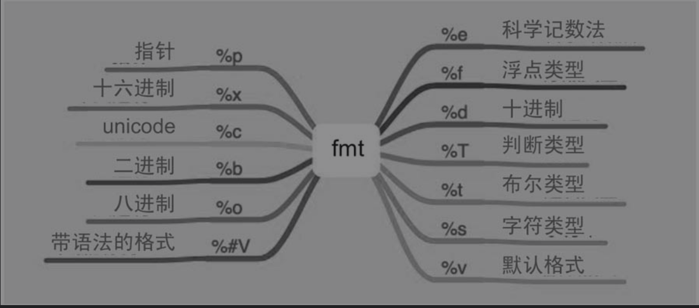

10.3. fmt¶
fmt实现了格式化输出，并提供了相应的占位符。
fmt支持的占位符比较多。
Go语言内部支持的数据类型如下：
数值类型：整数类型、浮点类型。
字符类型。
指针类型。
布尔类型。
其他。
10.3.1. 1.数值类型¶
%b：二进制。
%o：八进制。
%x：十六进制。
%X：十六进制。
%d：十进制。
%f：浮点类型。
%e：科学记数法。
%E：科学记数法。
%c：该值对应的unicode码值
%q：该值对应的单引号括起来的go语法字符字面值，必要时会采用安全的转义表示
%U: 表示为Unicode格式：U+1234，等价于"U+%04X"
func FmtUsage() {
var number = 100.203
var numberInt = 100
fmt.Printf("%d\n", numberInt)
fmt.Printf("%o\n", numberInt)
fmt.Printf("%x\n", numberInt)
fmt.Printf("%X\n", numberInt)
fmt.Printf("%b\n", numberInt)
fmt.Printf("%f\n", number)
fmt.Printf("%e\n", number)
fmt.Printf("%E\n", number)
}
10.3.2. 2.字符类型¶
%s 直接输出字符串或者[]byte
%q 该值对应的双引号括起来的go语法字符串字面值，必要时会采用安全的转义表示
%x 每个字节用两字符十六进制数表示（使用a-f）
%X 每个字节用两字符十六进制数表示（使用A-F）
func FmtStringUsage() {
var values = "golang"
fmt.Printf("%s\n", values)
fmt.Printf("%q\n", values)
}
10.3.3. 3.布尔类型¶
%t：布尔类型。
func FmtBoolUsage() {
var ok = true
fmt.Printf("%t\n", ok)
}
10.3.4. 4.其他¶
%T：判断类型。
%p：指针类型。
%v：默认格式。
%#v：带语法的格式。
func FmtOtherUsage() {
var a = 1
var b = 2.0
var ok = true
number := &a
var s = struct {
Name string `json:"name"`
}{
Name: "Go",
}
fmt.Printf("%T\n", a) //int
fmt.Printf("%T\n", b) //float64
fmt.Printf("%T\n", ok) //bool
fmt.Printf("%p\n%d\n", &a, number) //0xc00012805 8824634933336
fmt.Printf("%v\n", s) //{Go}
fmt.Printf("%#v\n", s) //struct { Name string "json:\"name\"" }{Name:"Go"}
}
10.3.5. 5.fmt占位符¶
fmt对不同的功能提供了非常类似的API：
Fprint/Fprintf/Fprintln：带格式的输出。
Print/Printf/Println：标准输出。
Sprint/Sprintf/Sprintln：格式化内容为string。
其中，Fprint/Print/Sprint表示使用默认的格式输出或格式化内容。
Fprintf/Printf/Sprintf表示使用指定的格式输出或格式化内容。
Fprintln/Println/Sprintln表示使用默认的格式输出或格式化内容，同时会在最后加上换行符（‘’）。
Print/Printf/Println是将内容输出到标准输出设备，底层调用的是Fprint/Fprintf/Fprintln，只是将第一个参数设置为os.Stdout（标准输出设备）。
func Fprintln(w io.Writer, a ...interface{}) (n int, err error) {
p := newPrinter()
p.doPrintln(a)
n, err = w.Write(p.buf)
p.free()
return
}
func Println(a ...interface{}) (n int, err error) {
return Fprintln(os.Stdout, a...)
}
总之，常用的是标准输出Print/Printf/Println方法和格式化字符串输出Sprint/Sprintf/Sprintln方法。
10.3.6. 6.错误类型¶
创建一个错误类型有两种方式：
errors.New()
fmt.Errorf
其实，fmt.Errorf底层就是调用errors.New来格式化字符串的。
func Errorf(format string, a ...interface{}) error {
p := newPrinter()
p.wrapErrs = true
p.doPrintf(format, a)
s := string(p.buf)
var err error
if p.wrappedErr == nil {
err = errors.New(s)
} else {
err = &wrapError{s, p.wrappedErr}
}
p.free()
return err
}
10.3.7. 7.输出定制化¶
fmt还提供了几个接口，有些结构体实现了接口内定义的方法就能定制化输出。
// Stringer is implemented by any value that has a String method,
// which defines the ``native'' format for that value.
// The String method is used to print values passed as an operand
// to any format that accepts a string or to an unformatted printer
// such as Print.
type Stringer interface {
String() string
}
// GoStringer is implemented by any value that has a GoString method,
// which defines the Go syntax for that value.
// The GoString method is used to print values passed as an operand
// to a %#v format.
type GoStringer interface {
GoString() string
}
package main
import "fmt"
type Val struct {
Name string `json:"name"`
Age int `json:"age"`
}
func (v Val) String() string {
return fmt.Sprintf("%s + %d", v.Name, v.Age)
}
func (v Val) GoString() string {
return fmt.Sprintf("%s + %d", v.Name, v.Age)
}
func main() {
v := Val{
Name: "hujianli",
Age: 10,
}
fmt.Println(v)
fmt.Printf("%#v\n",v)
}
可以看到结构体实现了Stringer和GoStringer接口，即实现了定制化输出。
10.3.8. 8.格式化verb应用¶
代码示例
package main
import (
"fmt"
"os"
)
type User struct {
name string
age int
}
var valF float64 = 32.9983
var valI int = 89
var valS string = "Go is an open source programmig language that makes it"
var valB bool = true
func main() {
p := User{
name: "John",
age: 18,
}
fmt.Printf("Printf struct %%v: %v\n", p)
fmt.Printf("Printf struct %%+v: %+v\n", p)
fmt.Printf("Printf struct %%#v: %#v\n", p)
fmt.Printf("Printf struct %%T: %T\n", p)
fmt.Printf("Printf struct %%p: %p\n", p)
fmt.Println("-------------------------------------------------------")
fmt.Printf("Printf float64 %%v: %v\n", valF)
fmt.Printf("Printf float64 %%+v: %+v\n", valF)
fmt.Printf("Printf float64 %%#v: %#v\n", valF)
fmt.Printf("Printf float64 %%T: %T\n", valF)
fmt.Printf("Printf float64 %%f: %f\n", valF)
fmt.Printf("Printf float64 %%4.3f: %4.3f\n", valF)
fmt.Printf("Printf float64 %%8.3f: %8.3f\n", valF)
fmt.Printf("Printf float64 %%-8.3f: %-8.3f\n", valF)
fmt.Printf("Printf float64 %%e: %e\n", valF)
fmt.Printf("Printf float64 %%E: %E\n", valF)
fmt.Println("-------------------------------------------------------")
fmt.Printf("Printf int %%v: %v\n", valI)
fmt.Printf("Printf int %%+v: %+v\n", valI)
fmt.Printf("Printf int %%#v: %#v\n", valI)
fmt.Printf("Printf int %%T: %T\n", valI)
fmt.Printf("Printf int %%d: %d\n", valI)
fmt.Printf("Printf int %%8d: %8d\n", valI)
fmt.Printf("Printf int %%-8d: %-8d\n", valI)
fmt.Printf("Printf int %%b: %b\n", valI)
fmt.Printf("Printf int %%c: %c\n", valI)
fmt.Printf("Printf int %%o: %o\n", valI)
fmt.Printf("Printf int %%U: %U\n", valI)
fmt.Printf("Printf int %%q: %q\n", valI)
fmt.Printf("Printf int %%x: %x\n", valI)
fmt.Println("-------------------------------------------------------")
fmt.Printf("Printf string %%v:%v\n", valS)
fmt.Printf("Printf string %%+v:%+v\n", valS)
fmt.Printf("Printf string %%#v:%#v\n", valS)
fmt.Printf("Printf string %%T:%T\n", valS)
fmt.Printf("Printf string %%X:%X\n", valS)
fmt.Printf("Printf string %%200s:%200s\n", valS)
fmt.Printf("Printf string %%-200s:%-200s\n", valS)
fmt.Printf("Printf string %%q:%q\n", valS)
fmt.Println("-------------------------------------------------------")
fmt.Printf("Printf bool %%v: %v\n", valB)
fmt.Printf("Printf bool %%+v: %+v\n", valB)
fmt.Printf("Printf bool %%#v: %#v\n", valB)
fmt.Printf("Printf bool %%T: %T\n", valB)
fmt.Printf("Printf bool %%t: %t\n", valB)
fmt.Println("-------------------------------------------------------")
s := fmt.Sprintf("a %s", "string")
fmt.Println(s)
fmt.Fprintf(os.Stderr,"an %s\n","error")
}